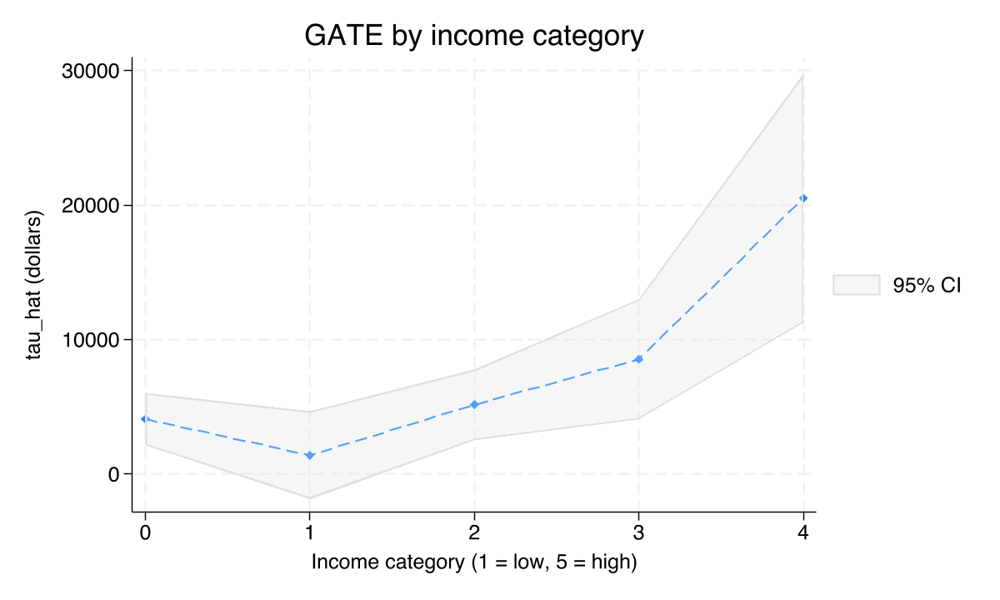
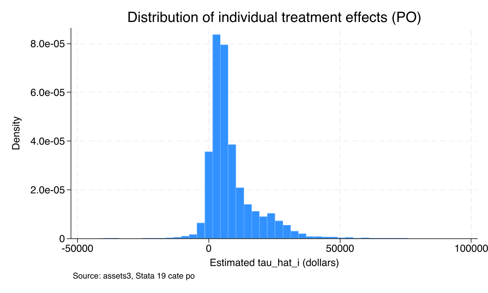
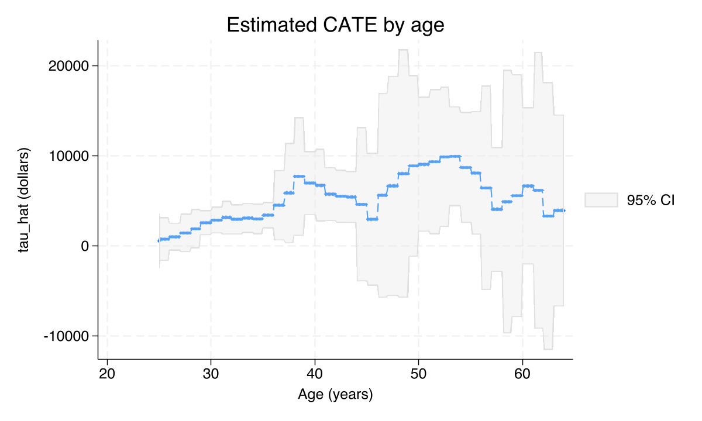
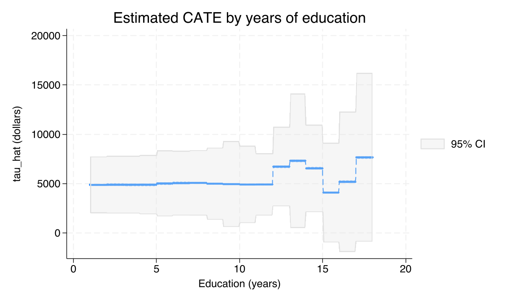
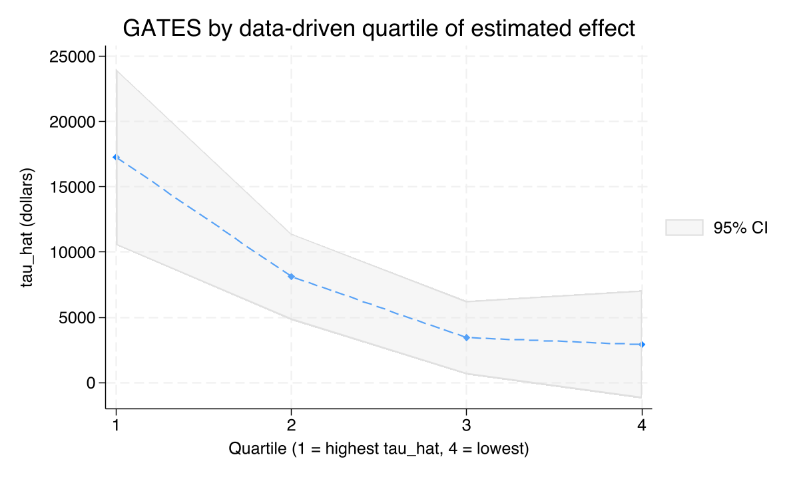
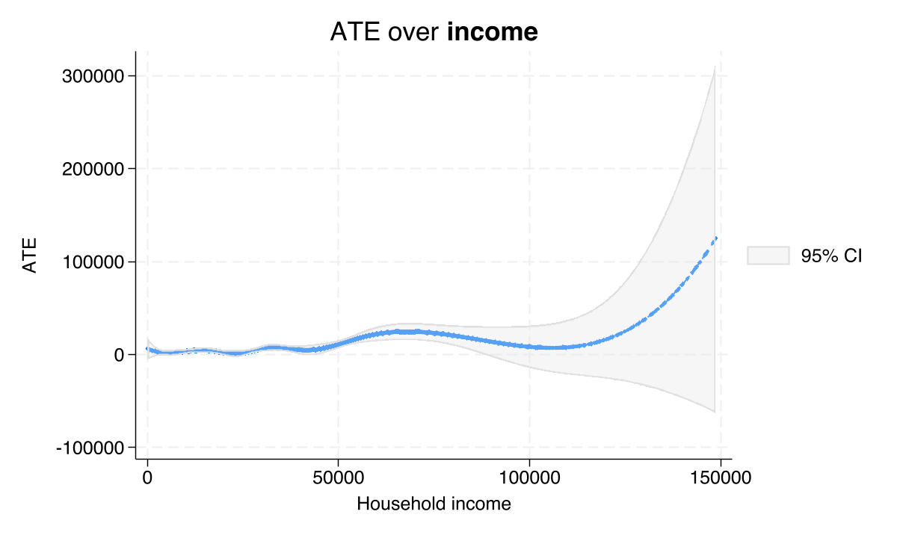

For whom does 401(k) eligibility build wealth?
Nagoya University (GSID)
June 11, 2026
Act I
The textbook workflow ends with one number: the Average Treatment Effect.
But policy makers, doctors, and managers never act on the average. They need to know who the program helps — and who it leaves behind. That’s the CATE.
| Group | Mean assets | N |
|---|---|---|
| Eligible for 401(k) | $30,347 | 3,682 |
| Not eligible | $10,790 | 6,231 |
Eligible workers are older, richer, more educated — so the $19,557 gap conflates the effect with who selects into eligibility.

GATE by income category with 95% bands: $4,087, $1,399, $5,154, $8,532, $20,511. The single average flattens all of this.
cate — cross-fit lasso + a causal forest, in one commandAct II
\[\tau(\mathbf{x}) = E\big[\,y(1) - y(0) \mid \mathbf{x}\,\big]\]
The average effect among households whose covariates equal \(\mathbf{x}\). Where \(\tau(\mathbf{x})\) bends with \(\mathbf{x}\), the program helps some households more than others.
The single ATE is just \(E[\tau(\mathbf{X})]\) — the CATE averaged over the population.
\[y(1),y(0) \perp d \mid \mathbf{x}\]
\[0 < \Pr(d=1\mid \mathbf{x}) < 1\]
Machine learning chooses controls flexibly; it cannot manufacture identification.
assets3, the canonical Chernozhukov–Hansen excerpt shipped with Stata 19.
cate runs cross-fit lasso and a causal forest in one commandLasso for the nuisance functions (cross-fitted), a generalized random forest for \(\tau(\mathbf{x})\), honest-tree bootstrap for the CIs — Stata 18 needed hand-rolled loops.
Both return a per-household effect function \(\hat\tau(\mathbf{x}_i)\) — they differ only in how they map nuisances into it.
$8,000
Parametric AIPW $8,019 · ML PO $7,937 · ML AIPW $8,120 — agreement across very different specifications
| Estimator | \(\chi^2(1)\) | \(p\) | Verdict |
|---|---|---|---|
cate po |
4.11 | 0.043 | reject homogeneity |
cate aipw |
5.54 | 0.019 | reject homogeneity |
estat heterogeneity — \(H_0:\ \tau(\mathbf{x})\) is constant. Both reject at 5%, so the heterogeneity hunt is not chasing noise.

PO-estimated individual effects \(\hat\tau_i\) across 9,913 households: a tight mode near $5–10k, a tail past $80k, and a small mass near or below zero.
| Covariate | Effect on \(\hat\tau_i\) ($) | \(p\) |
|---|---|---|
| Highest income category | +18,195 | 0.001 |
| Homeowner | +3,163 | 0.058 |
| Age (per year) | +205 | 0.082 |
| Education (per year) | −442 | 0.365 |
estat projection: the only coefficient significant at 1% is the top income category. \(R^2=0.0045\) — most heterogeneity is nonlinear, captured by the forest, not the projection.

PO-estimated CATE by age (others fixed at means): slightly negative in the mid-20s, clearly positive by 35–40, still rising through the 50s.

PO-estimated CATE by years of education: broadly flat around $1–3k from 8 to 18 years of schooling.

GATES by data-driven quartile of predicted effect: $17,279 → $8,121 → $3,444 → $2,919. A clean monotonic ladder; the bottom bin is not distinguishable from zero.
| Covariate | Top quartile | Bottom quartile | Diff | \(t\) |
|---|---|---|---|---|
| Income ($) | 62,739 | 26,861 | 35,878 | 56.2 |
| Age (years) | 45.2 | 35.0 | 10.2 | 35.7 |
| Education (years) | 14.0 | 12.7 | 1.4 | 18.6 |
estat classification: the data sorted itself; income is the dominant marker of who responds. All three gaps have \(t>18\).

Cubic B-spline of \(\hat\tau\) vs household income (income \(\le\) $150k): a smooth upward slope, steepest in the middle of the distribution.
Act III
$20,511
GATE, highest income category (vs ~$4,000 at the bottom). Joint test of equality across groups: \(\chi^2(4)=18.44\), \(p=0.001\)
The bottom GATES quartile is $2,919 with \(p=0.167\) — not statistically distinguishable from zero.
Combined with the small negative left tail of the histogram: roughly one in four households appears to gain close to nothing from eligibility.
Objection. A machine that flexibly selects controls surely earns us the causal interpretation.
Response. It does not. \(\tau(\mathbf{x})\) is identified only under unconfoundedness given \(\mathbf{x}\) and overlap. If, say, employer match rates vary with income and we never observe them, the income gradient is biased. The forest fits the function; it cannot rule out an unmeasured confounder.